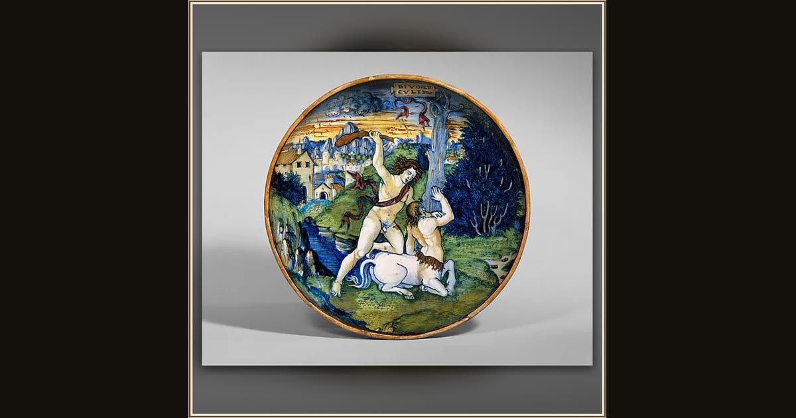

Dish (coppa): Hercules slays the centaur Nessus
Maestro Giorgio Andreoli · 1525 · met
A painted maiolica dish shows Hercules raising his club over the centaur Nessus. Deianeira recalls taking the dying centaur's blood as a gift, the source of the play's catastrophe (555). Explore its place in Sophocles's Plays, Trachiniae, line 535.